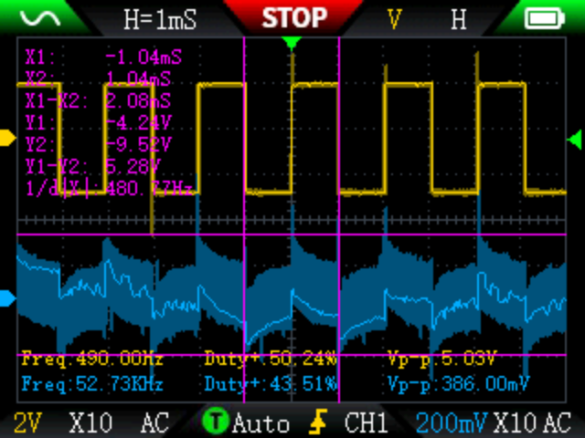
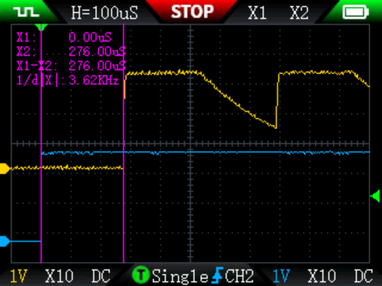
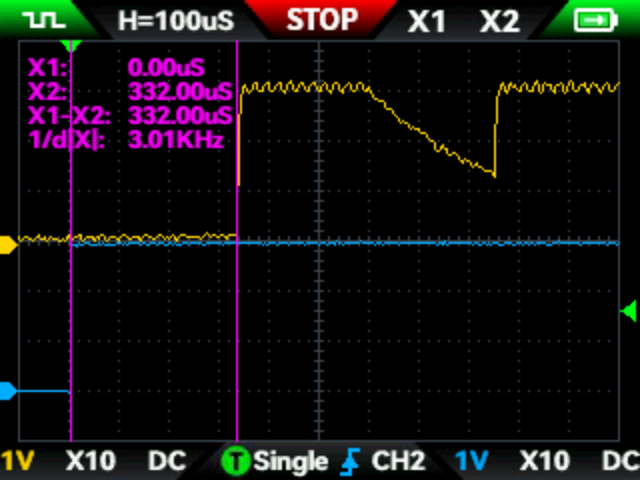
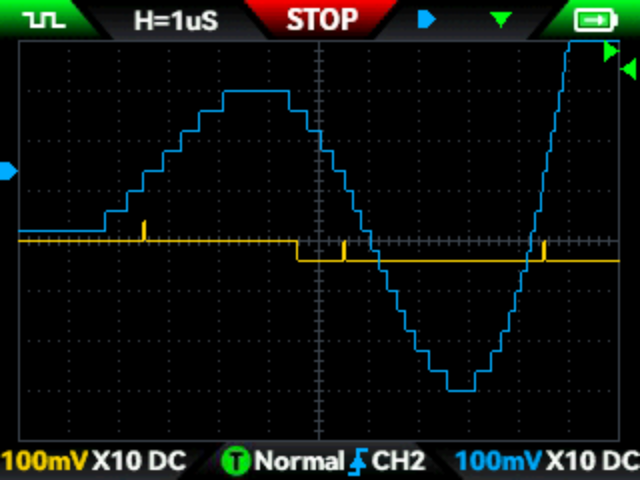

オシロスコープ機能，これは2C53Tの最も重要な機能です．
オシロスコープは2chの入力があり，そこそこ多機能だと思います．
購入リンク→https://amzn.to/3WqtKJ7
まず，このオシロスコープのほぼ全てを詰め込んだ画像がこちらです．

この画像では，2chの入力とMeasure測定，Cursor測定と残光表示を使用しています．
波形演算とFFTは使用していませんが，もうThe・オシロスコープという感じでの画像です．
ここまでしっかりと計測できるハンドヘルドオシロは多くないです．
残光表示の機能は俗に言うDPO，デジタル蛍光体オシロスコープというものだと思います．
ただしDPOは天下のTektronixの商標であるため，この表示になったのでしょう．
というかDPOのようなものを名乗るにはちょっと機能が足りません．
あくまで「ブラウン管オシロを模擬する」ものなので，波形の通る回数が多いところは色を濃くする必要がありますがそんな機能は無いに等しいです．
それでも偶然的に発生する異常波形を表示として残せるのは便利です．
Cursor測定は画面上の紫の線の垂直方向，水平方向でそれぞれの間の差分で測定ができます．
何気にこの機能は積んでいるメーカーが少ないので助かります．
ベンチトップのデジタルオシロは大体積んでるんですけどねぇ…
ものすごく便利で重宝する機能です．
Measure測定は画面の下の方に表示されている波形パラメータを表示する機能です．
Vppや周波数，Duty比も分かる優れものです．
ですが最近のデジタルオシロなら，キットのショボいやつでも搭載されている機能だと思います．
…とここまでは順調に高評価なわけですが問題があります．
トリガのかかり方が弱いことです．
トリガが最もかかりやすい低周波の正弦波や矩形波でも，時間軸方向を拡大しすぎると全然トリガが掛からないので，地味に面倒です．
しかもファームのアップデート前は波形取り込み後に時間軸方向の拡大をすることができなかったので細かいリンギングを見ることすらできませんでした．
ただアップデート後は後から拡大できるようになったので，評価が×から△に変わりました．
あとバグもあります．残光表示がONの時，トリガを一気に動かすとシステムがバグを起こしたのかシャットダウンします．
FNIRSIさん直してね⭐︎
ちなみに，アップデート前後のUIの変化も見せておきます．

↑アップデート前．文字が小さく，細い．

↑アップデート後．文字が少し大きく，太い見やすいものに変更された．
文字の見やすさは圧倒的です．
非常に見やすくなったので，今後のアップデートにも期待です．
また，このオシロは手持ち型というだけで普通の8 bitオシロスコープなので，デスクトップの8 bit機と同じように量子化誤差があります．
(アップデート後のオシロスコープ機能で可能になった)波形取り込みの後に垂直軸を拡大してやります．
すると，階段状に波形が表示されます．

他の機能については各記事をご覧ください．